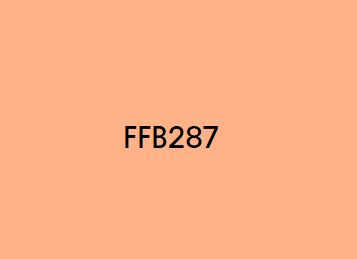
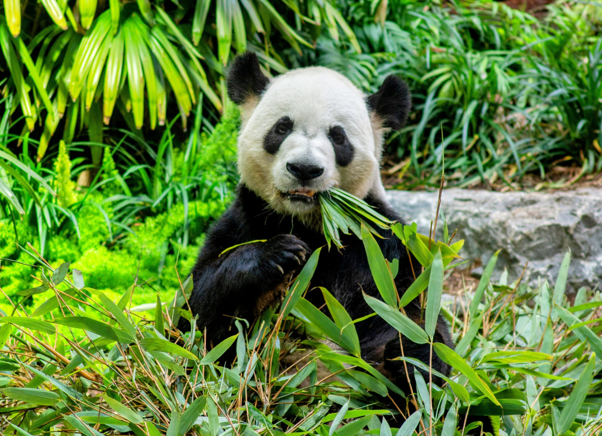
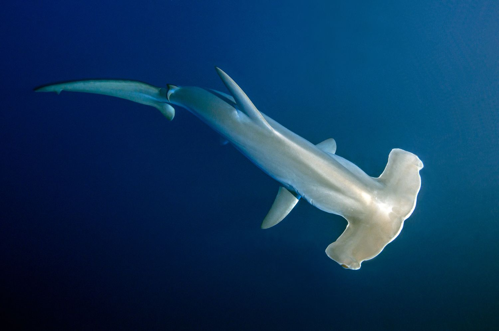
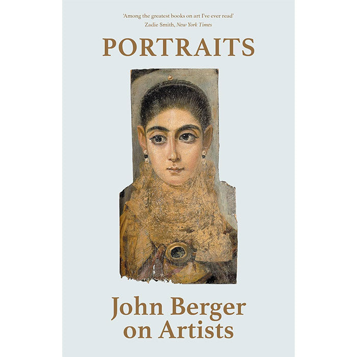
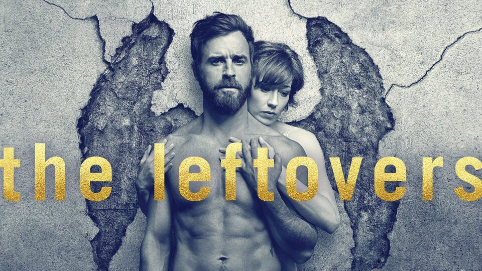
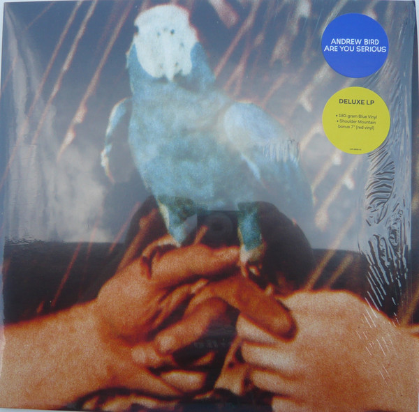

This is not up for debate and subject to change. Favorite things. Some specific. Some not.
Food:
Strawberries, my dad's chili or eggs benedict, chicken parmesan, Atlantic Canada oysters and shrimp cocktail, bruschetta, boston creme donut
Place I've Been:
Toledo, Spain on a history tour to visit the Museo del Greco. Park Güell in Barcelona a close second. Honorable mentions: Dowagiac, Michigan. Northern (Russian River) California. The Biltmore in Asheville, North Carolina.
Color:

Something kinda like this. Coral or pink orange. Orange defender.
Animal (Land/Sea):

Land: Giant Panda.

Sea: Hammerhead shark.
Videogame:
Animal Crossing. also Melee
Movie:
Full Metal Jacket, Jaws, Hook, the Sound of Music.
Check out my letterboxd for a full list!
Book:

Portraits (2015) by John Berger.
TV Show:

Honorable mentions: NBC Hannibal, The X Files, Bojack Horseman, The Witcher, The Sopranos, Parks and Rec, Fishtank, True Detective, Succession, Over the Garden Wall, Fleabag, Mad Men, House
Album:

Are you Serious (2016) by Andrew Bird.
Honorable mentions (off top of Head): Blonde on Blonde by Bob Dylan, Paul's Boutique by The Beastie Boys, Talking Heads '77, Paradise Pop. 10 by Christian Lee Hutson, God's Favorite Customer by Father John Misty, 14:59 by Sugar Ray, Assume Form by James Blake, II by Unknown Mortal Orchestra, Melophobia by Cage the Elephant, CTRL by SZA, Sweetner by Ariana Grande, We are the 21st Century Ambassadors of Peace & Magic by Foxygen.
Sport:
Football!! Bear down (Go COLTS GO IUFB!!!)
Thank you for reading!